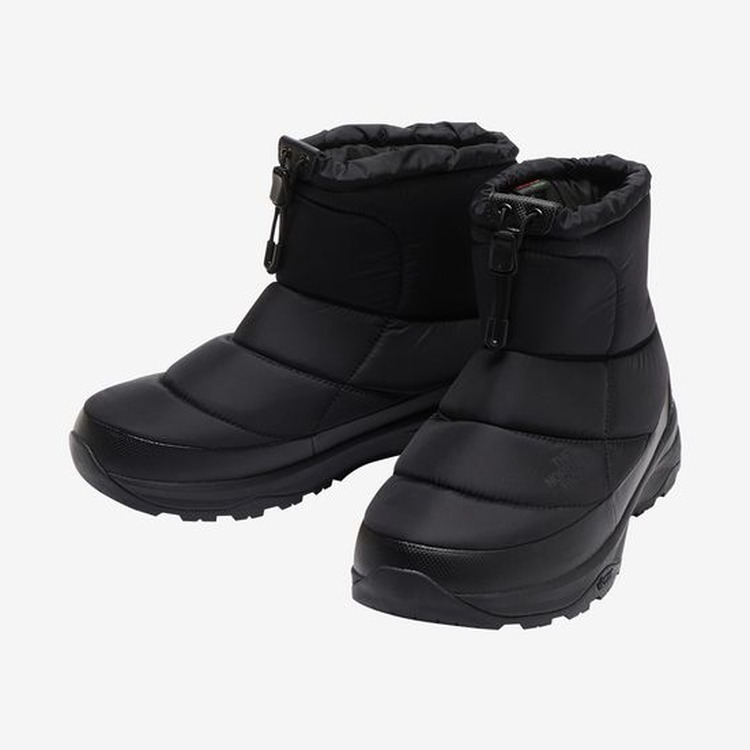
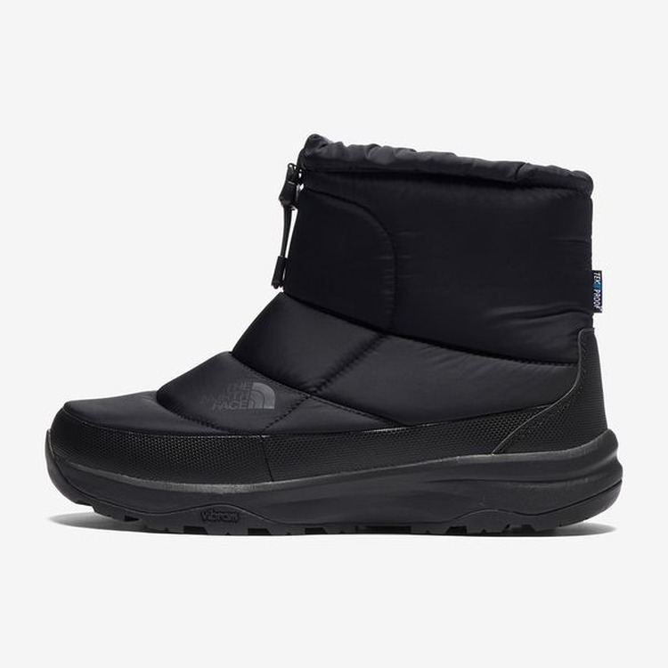
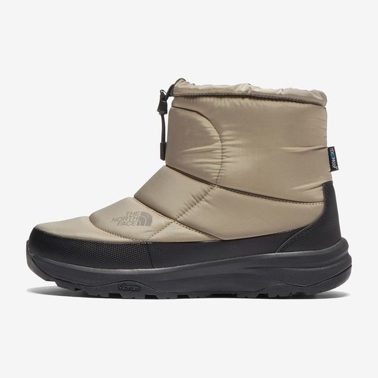
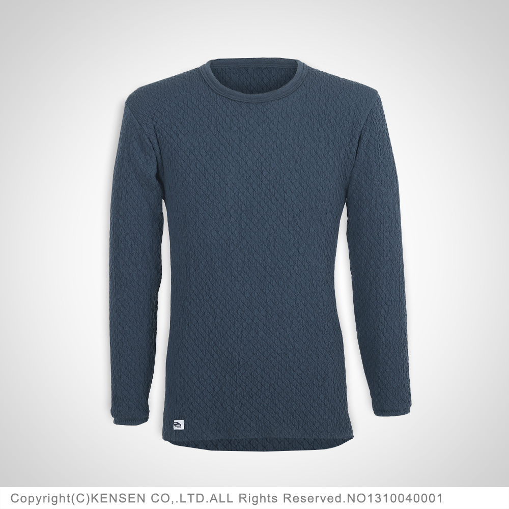
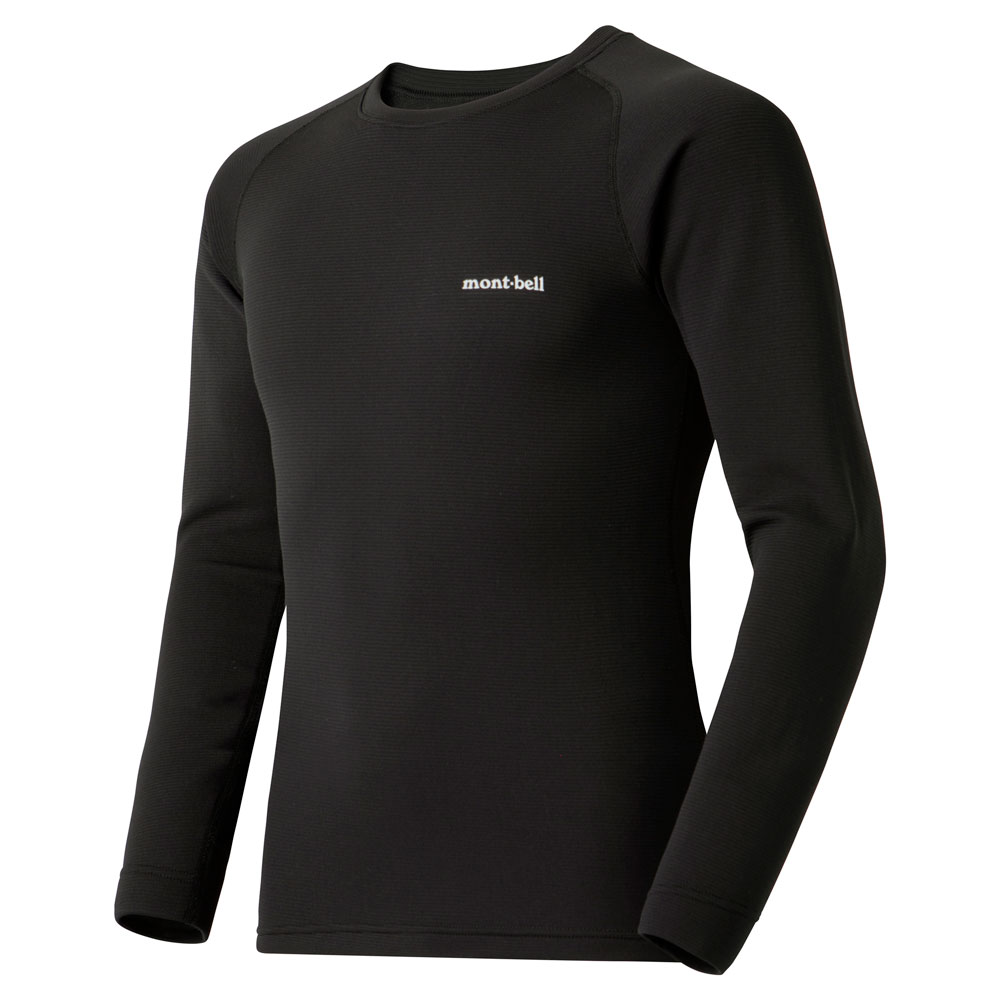
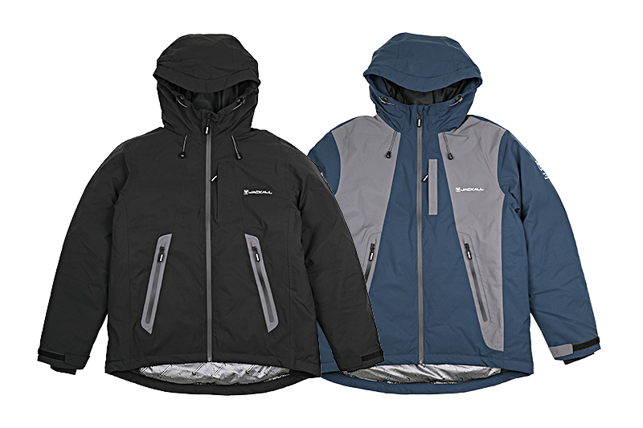

ヌプシ ブーティ ウォータープルーフ VII ショート
ヌプシ ブーティ ウォータープルーフ VII ショートは、ザ・ノース・フェイスの定番ウィンターブーツ「ヌプシ ブーティ」の防水ショートモデルです。
防水メンブレンと軽い中わたを組み合わせ、軽いのに暖かく、水しぶきや雨にも強いのが最大の特徴。足元から冷えやすい冬の堤防や港、船釣りの防寒シューズとしてぴったりです。

スペック
- メーカー
- THE NORTH FACE（ザ・ノース・フェイス）
- 品番
- NF52273
- サイズ
- 7／8／9／10／11（ユニセックス）
- 重さ
- 約385g（9インチ・片足）
- 素材
- アッパー：ナイロン（はっ水加工）、TEKWPROOF防水透湿メンブレン、THERMOLITE EcoMade インサレーション
ミッドソール：圧縮成型EVA
アウトソール：Vibram ICETREK - カラー
- TNFブラック×TNFブラック2／キャバングレー×TNFブラック
- 価格
- 23,980円（税込）
▼今すぐチェック

ヌプシ ブーティ ウォータープルーフ VII ショートの特徴
足元の冷えと濡れから守る
-
防水で、水しぶきや雨に強い
はっ水加工のナイロンのアッパーに、テックプルーフの防水メンブレンを入れた防水仕様。堤防の水たまりや船上の水しぶき、雨の日でも足が濡れにくい。
-
軽くて暖かい中わた
サーモライトの中わたで、軽さと保温性を両立。重い長靴と違って足が疲れにくく、釣り場まで歩く距離が長い日でも履きやすい。
-
冷えても硬くなりにくいソール
ソールはヴィブラム アイストレック。低温でラバーが硬くなるのを抑えて、寒い日でもグリップ力を保つ。日本人向けの足型で、足首ホールドシステムでしっかりフィットする。
ヌプシ ブーティ ウォータープルーフ VII ショートの使い方
冬の堤防や港、船釣りの防寒シューズとして使います。釣り場まで履いて行けて、帰りもそのまま普段の靴として使えるのが便利なところです。
履き口はコードで絞れるので、釣り場に着いたら履き口をしっかり締めて、冷たい風や水しぶきが入らないようにすると、足先まで冷えにくくなります。サイズは、冬に履く厚手の靴下を履いた状態で選びましょう。
ヌプシ ブーティ ウォータープルーフ VII ショートがおすすめの人
冬の堤防でのサビキ釣りやウキ釣り、夜のメバル・アジング、船釣りなど、立ったまま同じ場所で待つ時間が長く、足元から冷えやすい釣りをする人におすすめです。
足先が冷えると、体全体が寒く感じて集中が続きません。足元を暖かく保てば、朝夕の短い時合いまで粘れるので、寒い時期でも釣れるチャンスを逃しにくくなります。
ただし、釣り専用のシューズではないので、海藻の付いた濡れた岩場や磯、テトラ帯には向きません。足場の良い堤防や港、船で使いましょう。
ワンポイント
ブーツが暖かくても、靴下が汗で濡れると足先から冷えてしまいます。靴下は綿ではなく、ウールなど汗をかいても冷えにくい厚手のものを合わせると、ブーツの暖かさを最後まで生かせます。
カラー
ヌプシ ブーティ ウォータープルーフ VII ショートのカラーを紹介します。

TNFブラック×TNFブラック2全身ブラックで、汚れが目立ちにくい定番カラー。釣り場でも街でも使いやすい。

キャバングレー×TNFブラックベージュ系のグレーに黒いソールの組み合わせ。足元を明るく見せたい人に。
▼今すぐチェック
ヌプシ ブーティ ウォータープルーフ VII ショートとあわせてチェックしたいアイテム
-

チョモランマ ひだまり 詳細はこちら＞待つ釣りに向く日本製の防寒インナー。足元とあわせて体の芯の冷えも防ぎたい時に。
-

ジオライン EXP. モンベル 詳細はこちら＞動きの多い釣りに向く厚手の防寒インナー。汗をかきやすい人に。
-

サーモフォース エクストリームジャケット ジャッカル 詳細はこちら＞最大クラスの中綿量の防寒ジャケット。待つ釣りのアウターに。